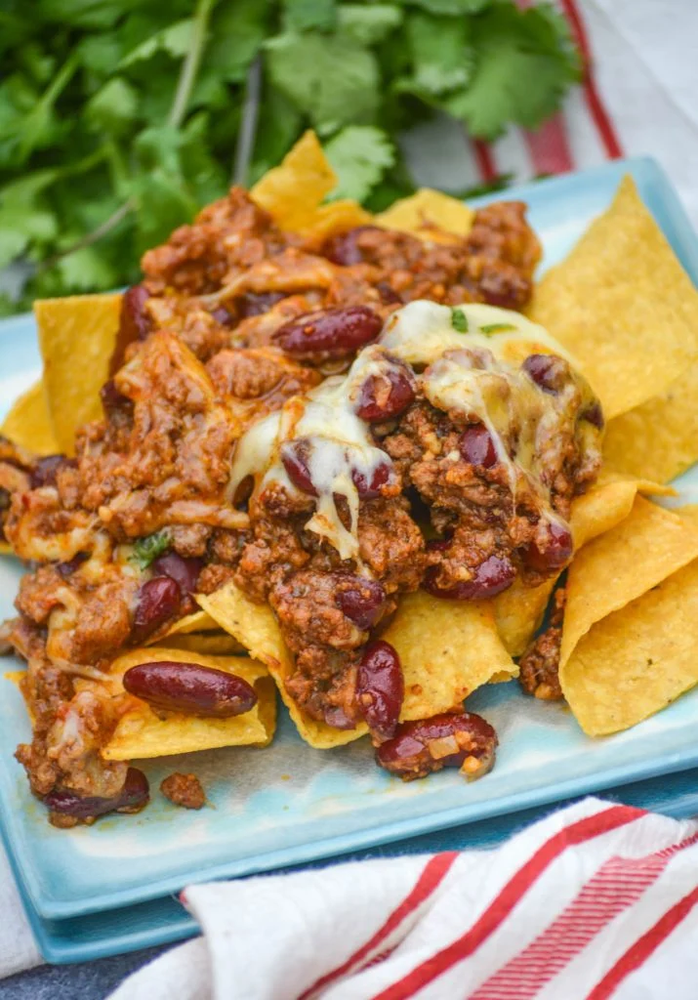

Nachos

Nachos topped with beef and beans
Ingredients
- 2 onions, diced
- 4 cloves of garlic, finely minced
- 2 tsp cumin
- 2 tsp corriander
- 1.5 Tbs chili powder
- 1 Tbs oregano
- 1 bullion cube
- 4 dl hot water
- 2 Tbs vinegar
- 3 Tbs tomato paste
- 2 pkg meat
- 2 cans chili beans
Steps
- Sautee the onions in olive oil until they begin to turn clear on 8.
- Add the spices and garlic, and sautee for 1-3 minutes.
- Add the meat, sautee until brown, breaking up into small peices on 10-11.
- Add the chili beans and liquid mix. Stir well, and cook on 7-6 for 30-40 minutes.
- stir every 10 minutes, scraping the bottom fo the pan.
- When most of the liquid is gone the dish is done.